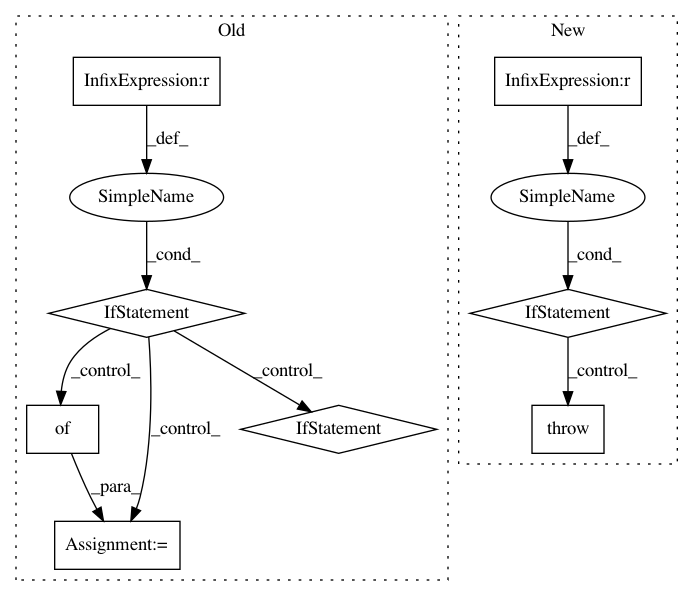

7c5daf825bcb84e6f750a6d6fad3a2626c4ea5ec,pyntcloud/io/las.py,,read_las,#,33
Before Change
data: dict
Elements as pandas DataFrames.
if laspy is None:
raise ImportError("laspy is needed for reading .las files.")
data = {}
with laspy.file.File(filename) as las:
data["points"] = pd.DataFrame(las.points["point"])
data["points"].columns = (x.lower() for x in data["points"].columns)
// because laspy do something strange with scale
data["points"].loc[:, ["x", "y", "z"]] *= las.header.scale
data = convert_location_to_dtype(data, xyz_dtype)
data = convert_color_to_dtype(data, rgb_dtype)
data["las_header"] = las.header
After Change
if backend == "pylas":
data = read_las_with_pylas(filename)
elif backend == "laspy":
data = read_las_with_laspy(filename)
else:
raise ValueError(f"Unsupported backend. Expected one of ["pylas", "laspy"] but got {backend}")
data = convert_location_to_dtype(data, xyz_dtype)
data = convert_color_to_dtype(data, rgb_dtype)
return data
In pattern: SUPERPATTERN
Frequency: 3
Non-data size: 8
Instances
Project Name: daavoo/pyntcloud
Commit Name: 7c5daf825bcb84e6f750a6d6fad3a2626c4ea5ec
Time: 2020-10-06
Author: sebastian.bullinger@iosb.fraunhofer.de
File Name: pyntcloud/io/las.py
Class Name:
Method Name: read_las
Project Name: Esri/raster-functions
Commit Name: b171c97f2974ef3f884ad9674de137eda7023875
Time: 2015-03-01
Author: akferoz@esri.com
File Name: functions/LinearSpectralUnmixing.py
Class Name: LinearSpectralUnmixing
Method Name: updateRasterInfo
Project Name: SheffieldML/GPy
Commit Name: 57c4306d9282b8d3fc815336c86c7af64f75a756
Time: 2015-10-03
Author: ibinbei@gmail.com
File Name: GPy/plotting/gpy_plot/gp_plots.py
Class Name:
Method Name: _plot_confidence